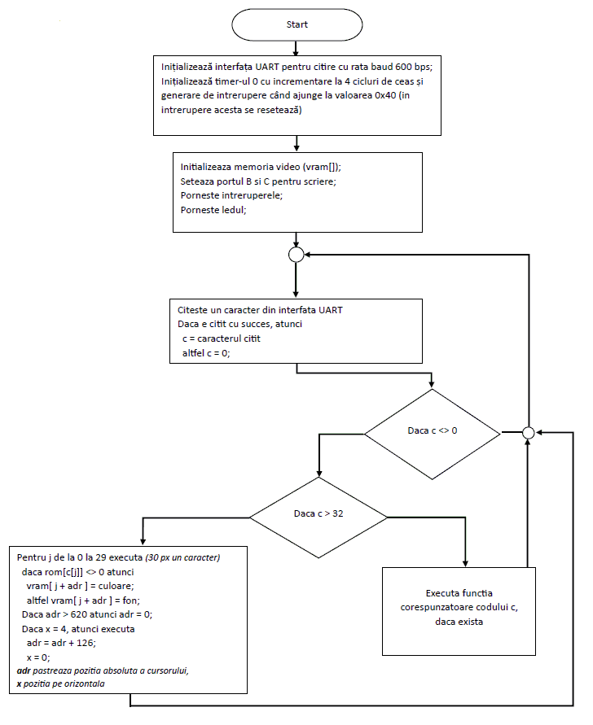
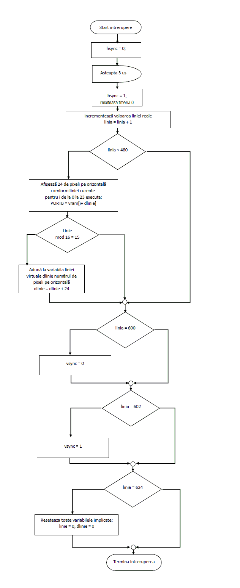
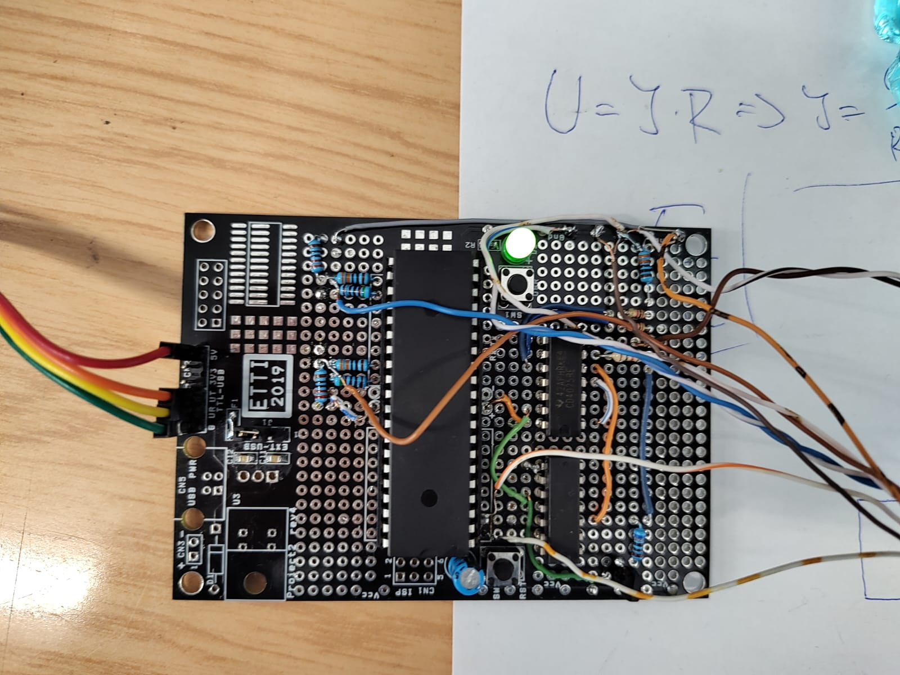
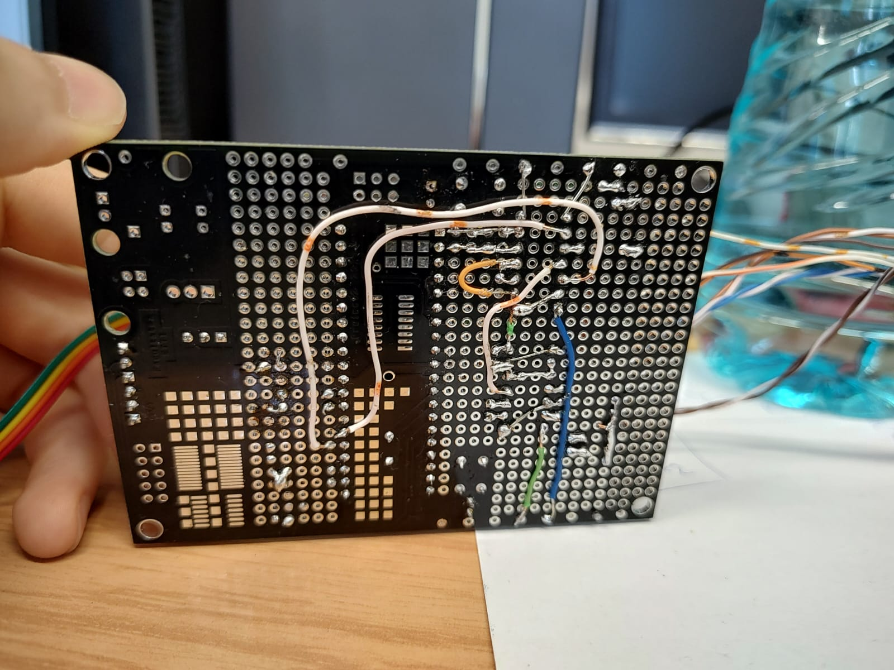
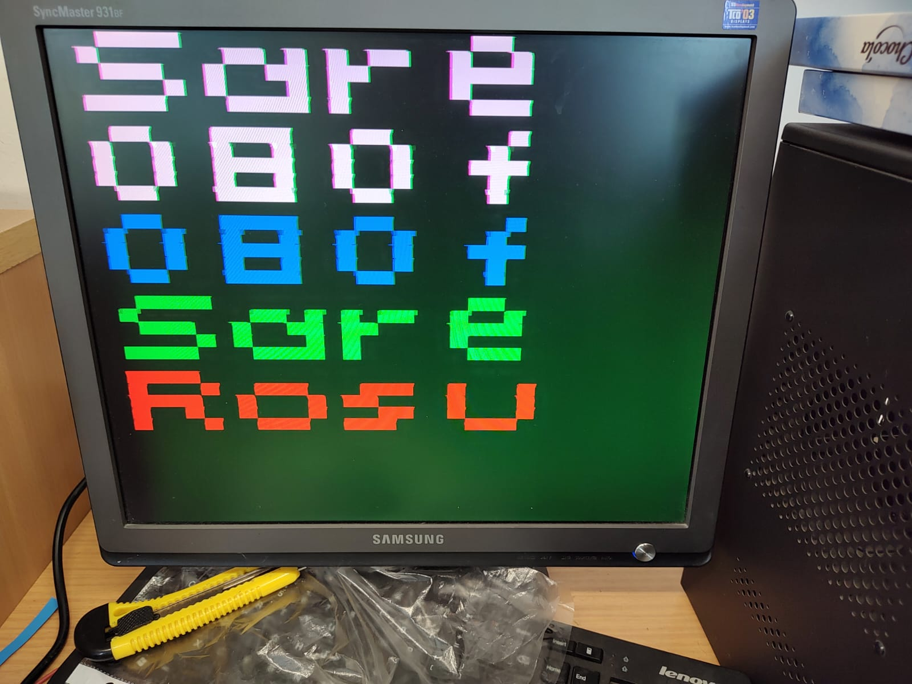

Introducere
Acest proiect implică crearea unui terminal cu intrare uart şi ieşire la un monitor cu intrare VGA. Acesta afişează mesajele primite pe interfa UART pe o rezoluţie de 4x5 caractere. Se foloseşte microcontrolerlul ATmega164A, 3 DAC-uri simple şi un set de proti logice nxor şi xor pentru formarea semanlului video in formatul corspunzător.
Componente Folosite:
- Microcontroler ATmega164A
- 4025 (3 porţi de tip nor)
- 4070 (4 porţi de tip nxor)
- Tranzistor NPN bc337
- Rezistoare
Implementare
Explicție teoretică
Prin VGA semnalul video este transmis in felul următor: Intensitățile fiecăreia componente a unui pixel (roșu, verde și albastru) sunt transmise separat, în format analogic, sub formă de tensiune intre 0,3V și 0,7V. Pe componenta verde mai este prezent și semnalul de sincronizare pe orizontală și pe verticală, fiind compus prin operația xor a impulsul de sincronizare pe orizontală și cel pe verticală, având tensiunile 0 sau 0,3V (deci nu posibil de transmis un semnal video în perioada de intervalul de sincronizare), probabil pentru a putea fi transmis cu ușurință și pe unele standarte a televizoarilor.

Impulusrile de sincronizare pe orizontală trebuie generate constant cu un interval exact, astfel monitorul să știe când să treacă într-o linie nouă, iar cel pe verticală este generat la un număr anumit de linii și durează o perioadă echivalentă cu câteva linii, în dependență de rezoluție, și care determină frecvența de actualizare a cadrelor. Aceaste intervale cu lungimile anumite erau necesare pentru monitoarele de tip CRT (cu tub), unde poziția fasciculul de electroni avea ne voie de un anumit timp pentru ca aceasta să ajunga de la stânga la dreapa ecranului sau în colțul opus (când se actualiza cadrul). În principiu sunt foarte multe standarte de timpuri pentru diferite combinații de rezoluții și frecvențe de actualizare, multe din acestea ne fiind suportate de monitoarele mai noi
Alegerea configuraţiei
Pentru acest proiect am ales rezoluția de 800*600 la frecvența de 60 Hz, fiind o setare des întâlnită și care poate fi ușor implementată, deoarece ceasul de 20 MHz poate fi împărțit pentru a creea perioadele necesare pentru semna. Pentru a transmite semanlul video se va folosi DAC-uri rezistive ponderate pe 2 biți pentru componentele roșu și albastru și un DAC de acest tip, însă pe 3 biți pentru componenta verde, unde oricum se vor folosi 2 biți pentru generarea intensității culorii și al 3-lea pentru generarea semnalelor de sincronizare între 0 și 0.3V. Se folosec doar 5 din cele 8 valori, iar pentru a sigura absența unei informații video în perioada când la ieșire se așteaptă 0 V, se folosește poarta NOR (a fost aleasă varianta cu 3 intrări doar deoarece doar acel model a fost disponibil la momentul procurării). Un tranzistor se foloseşte pentru a amplifica în curent semnalul generat de poarta logică, din cauza rezistenţei de ieşire mare a ei.
Schema Bloc

Mai sus este schema bloc a sistemului fără conexiunile de alimentare, butoane şi led. Săgeţile arată ieşirea unui pin concret (numărul din paranteze arată ordinea) pe mufa VGA.
Aici e schema cu schema electrica a placutei cu butoane, alimantare si interfata de iesire
Implementare Software
Software-ul pentru acest proiect este scris în C folosind IDE-ul CodeVisionAVR.
Scurtă descriere a codului
Codul constă dintr-o buclă infinită în care se citeşte un caracter în codul ASCII sau o secvenţ de date pentu o acţiune (precum schimbarea culorii sau curăţirea ecranului, lista şi formatul pot fi văzute aici) modificând memoria video (de 24*30 = 720 pixeli).
Imaginea este afișată printr-o intrerupere ce are loc la fiecare 26,4 us (comform rezoluției 800*600, 60 Hz). Aceasta generează impulsul de sinconizare pe orizontală, după care, dacă linia afișată este in zonă vizibilă, atunci modifică valoarea portului B comform culorii salvate in memorie a celor 24 de pixeli pe adresa liniei virtuale curente sau, dacă linia depășește 600, se generează impulsul de sincronizare pe verticală. Se folosește o variabila care păstrează numărul liniei curente care se incrementează la fiecare chemare a intreruperii și se resetează când se ajunge la prima linie din zona vizibilă a ecranului. O altă variabilă se folosește pentru a monitoriza numarul liniei virtuale, care se incrementeaza odată la 32 de linii reale.
Diagrama cod
Diagrama intrerupere
Imagini și Videoclipuri
Aici sunt imagini cu plăcuța cât și imagini cu mesaje afișate pe ecran
  Acest video arată funcționarea acestui dispozitiv
Concluzii:
Proiectul a fost realizat cu succes. În urma proiectului am studiat interfața VGA și metode de optimizare a codului.
Caractreristicele au fost limitate de memoria RAM limitată, viteza de ceas relativ mică a microcontrolerului și de faptul că nu se putea folosi semnal de ceas nu putea fi folosit la alte circuite externe ce ar elibera microprocesorul de execuția a mai multor funcții.Totuși se pot implementa mai multe funcții interesante, cum ar fi un joc X și 0, controlat prin UART